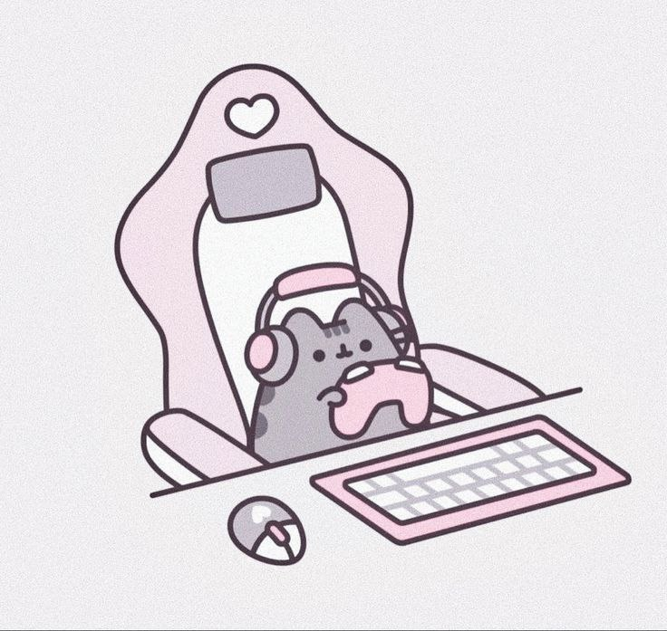

About me

I was born and grew up in a city where there were always a lot of gray walls — maybe that’s why, since childhood, I’ve wanted to add bright colors and unusual shapes to the world around me. I remember doodling in the margins of my school notebooks, inventing fonts for my friends, and dreaming that one day my drawings would be seen by thousands of people.
Now, my life is a constant search for inspiration in the simplest things: in the morning light falling on a coffee cup, in the texture of old asphalt after the rain, in the random color combinations in store windows. I can spend a long time looking at the work of street artists or getting lost in the architectural details of buildings — for me, that's a whole universe of ideas.
When I'm not working, you'll most likely find me with a camera in my hands: I love capturing moments that have a certain mood and a sense of mystery. I also collect vinyl records — not so much for the music, but for the aesthetics of the album covers and the tactile experience. And I'm a huge foodie; for me, cooking dinner is like composing a collage of textures, tastes, and aromas.
In people, I value sincerity and the ability to be amazed. I try not to lose that childlike curiosity myself — to ask questions, try new things, make mistakes, and laugh about them. I believe that real magic happens at the intersection of different disciplines and personalities, so I’m always happy to absorb the experience of others and share my own.
I dream that my work will not only be pleasing to the eye but will also become part of someone’s story, bring a smile to their face, or inspire them to take action. If our values resonate, I’d be happy to meet you and collaborate on projects!
My way(experience)
Developed a comprehensive brand identity for 5 new clients in the retail sector, including logos, brand guidelines, and outdoor advertising layouts.
Redesigned packaging for 3 existing brands, which enhanced shelf appeal and led to an average sales increase of 15%, based on client feedback.
Built a visual communication system from scratch for the marketing department, creating templates for presentations, commercial proposals, and email newsletters, which reduced the time spent on standard layouts by 20 hours per month.
Participated in tenders for major federal clients, preparing 8 final presentation materials, 4 of which helped the agency win the competition.
My project
My cvEducation
I completed my foundational training in 2022 at Contented, where I took the course "Graphic Design. Basic Level." The program covered composition, typography, color theory, and the Adobe Creative Suite (Photoshop, Illustrator, InDesign). During this time, I developed a logo for a local clothing brand, created a visual identity for a bakery, and laid out a multi-page booklet for an exhibition.
In 2023, I continued my education at Skillbox with a course in "Branding and Identity." My final project was the creation of a complete brand book for a coffee shop called "Caffeine," which included designing the logo, developing visual patterns, and creating a range of branded materials.
Most recently, in 2024, I attended an intensive workshop at Artemy Gorbunov's Design School focused on "Typography in the Digital Environment."
Beyond formal courses, I believe in continuous self-education. I regularly study classic design literature by authors such as Jan Tschichold, Emil Ruder, and Johannes Itten. I also participate in webinars and stay up to date with current trends in the design world to keep my work fresh and relevant.
Skills
Software
- Adobe Photoshop (advanced: photo retouching, color correction, compositing, masking)
- Adobe Illustrator (expert: logo design, illustrations, patterns, vector graphics)
- Adobe InDesign (multi-page layout: catalogs, brochures, books, magazines)
- Figma (UI design, prototyping, components)
Design Expertise:
- Brand identity development (logos, brand books, guidelines)
- Typography and type design
- Packaging and label design
- Print design and pre-press preparation
- Print design and pre-press preparation
- Layout design for catalogs and publications
- Social media visuals and digital advertising
Code Example
My code
Regex regex = new Regex($@"\S*{autor}\S*");
Painting[] paintings1 = new Painting[0];
for(int i = 0; i < paintings.Length; i++)
{
if (Regex.IsMatch(paintings[i].autor, regex.ToString()))
{
Array.Resize(ref paintings1, paintings1.Length + 1);
paintings1[paintings1.Length - 1] = paintings[i];
}
}
return paintings1;